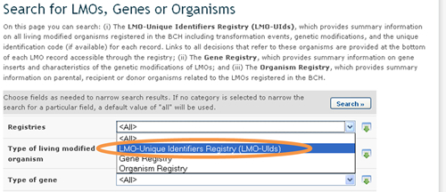
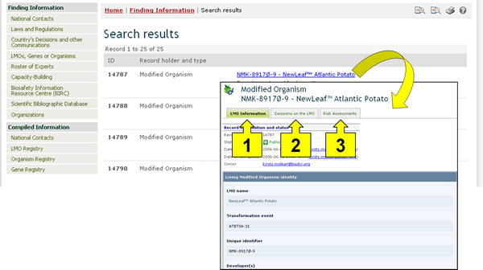
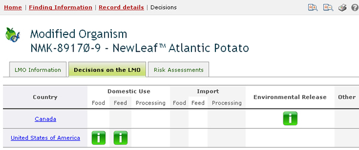
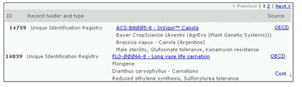

The LMO - Unique Identifiers Registry contains all LMO records, which includes information about the transformation event, genetic modification, and the unique identification code (if available). The records provide links to all decisions and risk assessment reports that refer to these organisms.

To narrow search results to records in the LMO - Unique Identifiers Registry, select that option from the Registries field. Records in the LMOs registry provide the following information:
-
Contact information of the developer, company or applicant;
-
Name and identity of the LMO (trade name);
-
Unique identification (when available);
-
Information about related LMOs;
-
Information on the recipient or parental organism (including Taxonomic name or status, Common name(s) and Point of collection or acquisition);
-
Information about the LMO (including the Transformation event, Techniques used for modification, Gene inserts, Donor organism(s) Point of collection or acquisition of donor organism(s), Introduced or modified traits and description of gene modification);
- Any other relevant information and references.
Once a record is selected from the registry (either from the search results or from the compiled information registry), its information is displayed on the screen. Three tabs at the top of each LMO record provide links to:
-
LMO information;
-
Decisions on the LMO; and
-
Risk assessments.

The LMO Information tab displays general information about the LMO, including its name, transformation event, unique identifier, and more data.
The Decisions on the LMO tab displays all decisions taken by countries regarding this LMO in a table format. The first column of the table displays the country taking the decision, while the rest of the columns indicate which categories of use of the LMO have been addressed in the decision. If a decision from a country addresses a particular use of the LMO, then a green icon will appear in the column corresponding to that category of use; clicking on that icon will take the user to the record of the decision and display the information about it. If, for example, a country has taken a decision about using the LMO for food, feed and processing, then there will be a green icon under each of those three categories in the row corresponding to that country in the table.

The Risk Assessments tab provides a list of all records containing information about risk assessments regarding the LMO selected.
The BCH Central Portal uses a unique identification system for living modified organisms to facilitate searching and retrieval of information. Currently, the only existing unique identification system in international use is the OECD Unique Identifier for Transgenic Plants.
The OECD Unique Identifier is a simple alphanumeric code that is given to each living modified plant that is approved for commercial use, including for use as food or feed, similar to the ISBN codes used to identify books. The OECD naming system has been designed so that developers of a new transgenic plant can generate an identifier and include it in the dossiers that they forward to national authorities during the safety assessment process. Once approved, national authorities forward the unique identifier to the OECD Secretariat for inclusion in the OECD’s product database, from which the information is automatically shared with the Biosafety Clearing-House.
The unique identifier is a nine-digit code, composed of three elements that are separated by dashes (-). These elements are:
-
2 or 3 alphanumeric digits to designate the applicant;
-
5 or 6 alphanumeric digits to designate the transformation event;
-
1 numerical digit for verification (this is intended to reduce errors by ensuring the integrity of the alphanumeric code).

Two approaches are possible for products created with more than one transformation event (often referred to as “stacked” transformation events), where these transformation events have been previously approved for commercialization. An applicant may choose to generate a novel unique identifier for such products or they may choose to use a combination of the unique identifiers from products previously approved for commercialization.